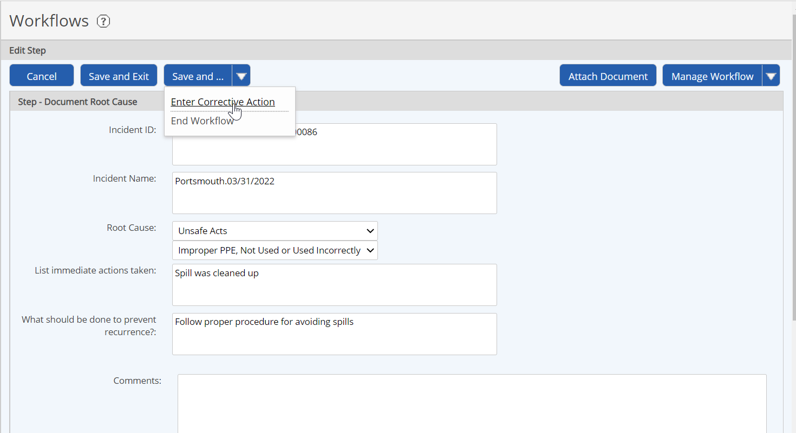
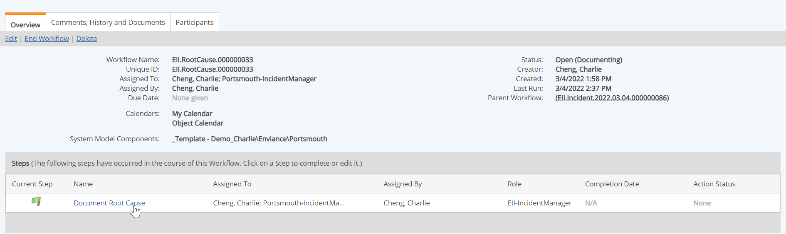

Some workflows may give you the option to create one or more child workflows. For example, you may need to initiate one or more corrective actions as part of a recording an incident via a workflow. The corrective action is a separate workflow that is associated to the parent workflow as a child.
Child workflows may be initiated either from the Edit or View mode for a step.
To create a child workflow from a step form:
After completing the appropriate fields in the step form, select the appropriate action (i.e., "Create [Workflow Name]") from the dropdown menu on the Save As... button (in edit mode) or the Next Steps button (in view mode).
If the form has been edited, the fields will be saved and the values for any fields that are also on the child workflow will be copied to the child workflow.

After the child workflow has been created, you will be returned to the step form of the parent workflow. You may continue with the current workflow as needed.
To create a child workflow from the Workflow Overview:
Open the Workflow Overview.
From the Workflows panel on your Desktop (or other dashboard), select the Workflow Name link.
From Workflows Manager (Tasks and Workflows page), right click the workflow and choose View.
In the Steps list, select the step at which you want to create a child workflow.

The step form will be displayed in either View or Edit form, depending on your assignee status and permissions. Continue as above to create the child workflow from the step form.
The child workflow due date may be later than the parent workflow. A child workflow may also remain open after the parent workflow has been closed, and must be closed separately.